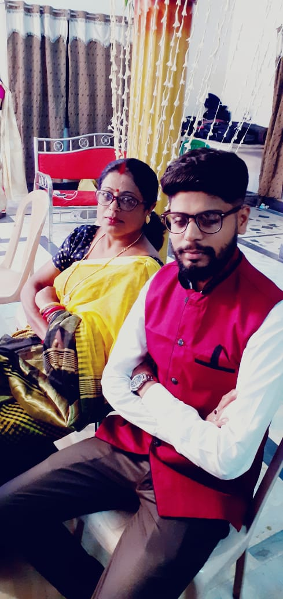

NAME- VISHAL CHATTERJEE
MOTHER- UMA CHATTERJEE
FATHER - UTTAM KUMAR CHATTYOPADHYAY
DOB- 19.04.1994
PLACE- CHANDIL(JHARKHAND)
OCCUPATION - FRONTEND DEVLOPER( SOFTWARE ENGINEER)
VISHAL WAS BORN IN A MIDDLE CLASS FAMILY IN A VILLAGE CHANDIL LOCATED IN SARAIKELA DISTRIC JHARKHAND SINCE HIS CHILDHOOD HEWANTED TO BE A BUROCRATE BUT UNFORTUNATLLY HE CAN NOT GET SUCESS ON THAT FIELD BUT WHEN HE START HIS ACARRER AS A DATA SCIENTIST IN IBM SOFTWARE BECOME A PRO DEVLOPER AND HIS BLOGS CROSSES ALL THE BOUNDRIES OF THE NATION AND MAKE THE ENTIRE FAMILY PROUND ON THIS CARRER. HE IS A WELL KNOWN SINGER AS WELL ..............
THE JOURNEY COUNTINUES...........


VISHAL WAS BORN IN A MIDDLE CLASS FAMILY IN A VILLAGE CHANDIL LOCATED IN SARAIKELA DISTRIC JHARKHAND SINCE HIS CHILDHOOD HEWANTED TO BE A BUROCRATE BUT UNFORTUNATLLY HE CAN NOT GET SUCESS ON THAT FIELD BUT WHEN HE START HIS ACARRER AS A DATA SCIENTIST IN IBM SOFTWARE BECOME A PRO DEVLOPER AND HIS BLOGS CROSSES ALL THE BOUNDRIES OF THE NATION AND MAKE THE ENTIRE FAMILY PROUND ON THIS CARRER. HE IS A WELL KNOWN SINGER AS WELL ..............
THE JOURNEY COUNTINUES...........
